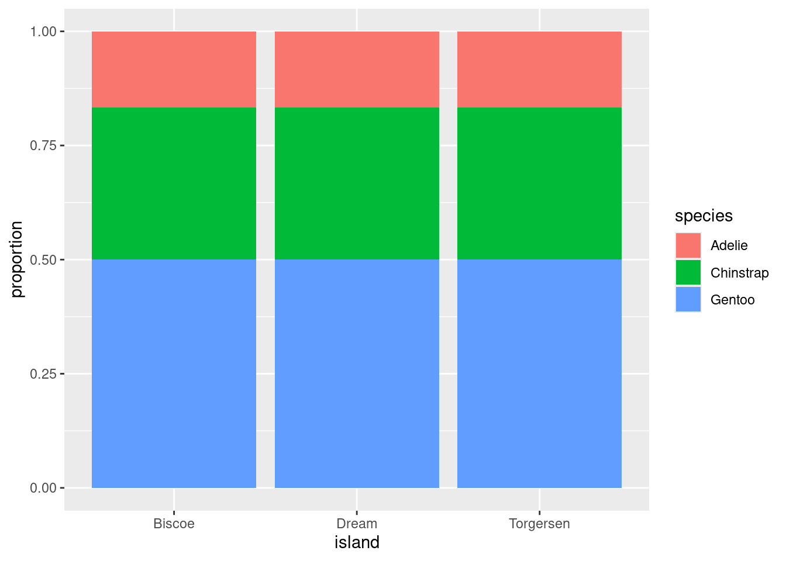

| Biscoe | Dream | Torgersen | |
|---|---|---|---|
| Adelie | 44 | 55 | 47 |
| Chinstrap | 0 | 68 | 0 |
| Gentoo | 119 | 0 | 0 |
Summarizing Categorical Data
From data frames to tables. From tables to bar charts.
The tools for calculating numerical summaries and graphical summaries can be cleanly divided between tools developed for categorical data and tools for numerical data. We’ll discuss each in turn, starting with categorical data.
When Dr. Gorman collected data near Palmer Station, Antarctica, she recorded a total of eight variables on 333 penguins, 10 rows of which are presented here in a data frame.
| species | island | bill_length_mm | bill_depth_mm | flipper_length_mm | body_mass_g | sex | year |
|---|---|---|---|---|---|---|---|
| Chinstrap | Dream | 42.4 | 17.3 | 181 | 3600 | female | 2007 |
| Chinstrap | Dream | 52.2 | 18.8 | 197 | 3450 | male | 2009 |
| Chinstrap | Dream | 47.0 | 17.3 | 185 | 3700 | female | 2007 |
| Gentoo | Biscoe | 43.4 | 14.4 | 218 | 4600 | female | 2009 |
| Gentoo | Biscoe | 51.1 | 16.3 | 220 | 6000 | male | 2008 |
| Adelie | Biscoe | 39.6 | 20.7 | 191 | 3900 | female | 2009 |
| Chinstrap | Dream | 46.4 | 17.8 | 191 | 3700 | female | 2008 |
| Adelie | Biscoe | 40.5 | 17.9 | 187 | 3200 | female | 2007 |
| Gentoo | Biscoe | 42.6 | 13.7 | 213 | 4950 | female | 2008 |
| Gentoo | Biscoe | 48.4 | 16.3 | 220 | 5400 | male | 2008 |
The first two of these you’ll recognize as nominal categorical variables. The species of each penguin can take one of three levels: Adelie, Chinstrap, or Gentoo; and the island on which they were found can also take three levels: Biscoe, Dream, or Torgersen.
Contingency tables
If I asked you to look at this data frame and describe what these two variables show, that’s a surprisingly difficult task! The raw data frame has simply too much information to process at a glance. To make it easier, we need to consolidate all of that information into a few numerical summaries. Since these variables don’t take numbers as values, we can’t take an average or a median. What we can do, though, is simply count up the number of penguins that appeared in every combination of levels and lay them out in a table like this:
After a few moments of looking at this table, a few features emerge:
- The Chinstrap penguins were only found on Dream island.
- Adelie penguins are the most common.
- The most prevalent penguin type in this data set was a Gentoo from Biscoe Island.
This method of displaying data is called a contingency table.
- Contingency table
- A table that shows the counts or frequencies of observations that occur in every combination of levels of two categorical variables. Used to display the relationship between variables.
We can also opt to present these counts in graphical form by constructing a bar chart. There are two common methods for laying out counts across two variables in a bar chart.


The stacked bar chart puts one of the variables along the x-axis (the species) and fills up the y-axis according to the counts in each level of the other variable (the island). The side-by-side bar chart is similar, but unstacks the “Adelie” bar to put the three islands besides one another.
So with two similar to charts to choose from, which one should you pick? The stacked bar chart succeeds in highlighting the total number of Adelie penguins: 146 (also the sum of the top row of the contingency table). The side-by-side version makes that total harder to see, but it is easier to see at a glance the relative sizes of which islands each of those Adelie penguins came from.

From Counts to Proportions
When you count the number of observations in each level of a categorical variable, you’re encoding the overall magnitude of each. But often what is more important is the relative magnitude of each. We can emphasize this by converting counts into proportions.
| Biscoe | Dream | Torgersen | |
|---|---|---|---|
| Adelie | 44 | 55 | 47 |
| Chinstrap | 0 | 68 | 0 |
| Gentoo | 119 | 0 | 0 |
| Biscoe | Dream | Torgersen | ||
|---|---|---|---|---|
| Adelie | 0.132 | 0.165 | 0.142 | 0.439 |
| Chinstrap | 0.000 | 0.204 | 0.000 | 0.204 |
| Gentoo | 0.357 | 0.000 | 0.000 | 0.357 |
| 0.489 | 0.369 | 0.142 | 1.000 |
The second table contains two different types of proportions that can be found in the middle and margins of the table, respectively.
- Joint Proportion
- The proportion of observations of multiple variables that appear in a combination of levels of those variables. E.g. 44 / 333 = .132, the proportion of all 333 penguins that were Adelie and from Biscoe.
- Marginal Proportion
- The proportion of observations in one variable that appear in a single level of that variable. E.g. (44 + 119) / 333 = .489, the proportion of all penguins that were from Biscoe.
From these proportions we can derive a third type of proportion.
- Conditional Proportion
- The proportion of observations in one level of one variable that appear in a level of a second variable. E.g. .132 / .489 = .269, the proportion of penguins from Biscoe that were Adelie.
These distinctions are important because often a subtle change in language can result in a dramatically different number. Revisit the observations made about the original table of counts:
- The Chinstrap penguins were only found on Dream Island.
- Adelie penguins were the most common.
- The most prevalent penguin type in this data set was a Gentoo from Biscoe Island.
The first observation refers to a conditional proportion: of the 68 total Chinstrap penguins, 68 of them were on Dream (a proportion of 1). The second refers to a marginal proportion: .439 of the penguins were Adelie versus .204 Chinstrap and .357 Gentoo. The third is a joint proportion: .357, or 124 out of all 333 penguins were Gentoos living on Biscoe.
With these distinctions in hand, we can construct a useful variant of the bar chart: the normalized stacked bar chart.
Instead of plotting raw counts, a normalized bar chart plots proportions. But which proportions?
If you look back and forth between this bar chart and the table of proportions, you’ll eventually decide that this bar chart is showing conditional proportions. The height of the blue bar in the lower left corner indicates the proportion of all Adelie penguins that were from Torgersen: 47 / 146 = .322. Since species is in the denominator of this proportion, we say that we’ve “conditioned on” species.
We can take the same data and get a very different story if instead we condition on island.

Now, the height of the blue bar in the lower left of the plot shows the proportion of penguins from Biscoe that were Gentoo: 119 / 163 = .730.
One last question before we move on: of these two charts, which one more clearly shows the species distribution on Dream Island? Dream shows up in both charts, but only one gives you a good answer to this question.
The answer to this question comes from the second chart. Here the species breakdown on Dream is clearly shown in the middle bar: a bit more than half are Chinstrap, the rest are Adelie. Trying to pry this information out of the first chart is actually impossible! When we conditioned on species, we lost the relative numbers of Chinstraps and Adelies - where they found in equal numbers or were there 100 Chinstraps for every Adelie? That information can’t be back-engineered from the first chart, and without it, we can’t reconstruct the distribution as seen in the middle bar of the second chart.
The lesson from this is powerful: if you wish to make a claim rooted in a conditional proportion and are using a normalized bar chart, it is essentially to think carefully about which conditional proportion your chart is displaying.
Identifying an association
Is there an association between species and which island they are found on? With a clearer sense of proportions under our belt, we can define this more precisely.
- Association
- There is an association between two categorical variables if the conditional proportions vary as you move from one one level of the conditioning variable to the next.
This is best illustrated by showing the previous plot of the real data right next to an example of what a penguins data set would look like that exhibits no association between species and island.


In plot on the right, as you gaze from left to right, looking across first Biscoe, then Dream, then Torgersen Islands, you see that the distribution of species is unchanged. There are always the most Gentoos, then Chintraps, then Adelies, regardless of the island. This indicates that there is no association between the variables in this data set.
This stands in stark contrast to the plot of the real data on the left. On Biscoe Island, Gentoo penguins dominate, with a smaller proportion of Adelies. Chinstraps are nowhere to be found. On Dream Island, its the Gentoos that are absent and we find roughly similar proportions of Chinstraps and Adelies. On Torgersen we observed only Adelies. This data set exhibits a strong association between species and island.
Summary
A wise statistician once said, “In statistics, most of what we do is add things up. Sometimes we divide. The challenging part is deciding what to add and divide.” This captures the deceptive simplicity of summarizing categorical data. Categorical summaries involve counts of categories or proportions. Those proportions can be joint proportions, marginal proportions, or conditional proportions. Those counts and proportions are commonly displayed in contingency tables or in bar charts. Subtle choices of which proportion to present results in the telling of dramatically different stories.